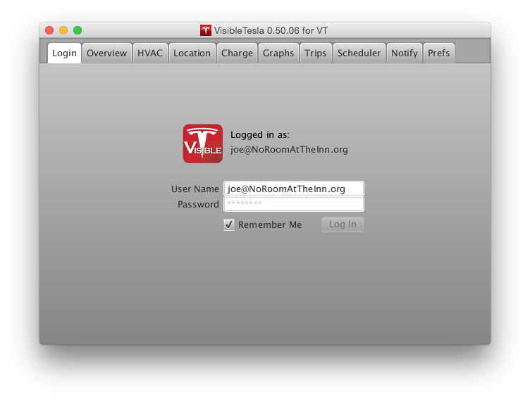

The Login Tab
When you launch the app you'll start out in the Login Tab. The other tabs will be disabled until you log in. The first time you use the app you'll need to enter the same username and password you use with the iPhone or Android app. If you'd like the app to remember you so you won't have to re-enter your details every time, check the "Remember Me" box before clicking the "Login" button. On subsequent runs of the app, you won't need to enter your credentials.
Once VisibleTesla successfully logs in, you'll see the Tesla logo goes from a grayed-out look to the normal appearance shown in the screen shot below. After the login process completes, VisibleTesla will automatically switch to the Overview Tab. This may not happen immediately because VisibleTesla first queries your car for some basic information that will be used throughout the application. For example, it determines what units are being used in the car (e.g. Miles or Kilometers).
Notes:
- Even if you use the "Remember Me" feature, your username and password will not be stored on your computer. Instead, the app will store "cookies" which contain encoded information from Tesla. The cookies are stored in a file called cookies.txt. You should not share that file with others. Even though it does not contain your password, it can be used by others to connect to your car.
- If you don't want a cookies file to be created, don't check the "Remember Me" box. It is also perfectly fine to delete the cookies.txt file.
- All communication between the app and Tesla are encrypted including the login process.
- If you logout of the application, you'll need to re-enter your credentials to use the app again.
If you are lucky enough to own more than one Tesla, you'll need to select which one you want to use. After VisibleTesla has successfully logged in it checks to see if you have more than one car. If you do, a dialog will pop up with a list of your vehicles. Choose the vehicle you're interested in and hit OK. At the moment you must quit the app and restart to use another vehicle.